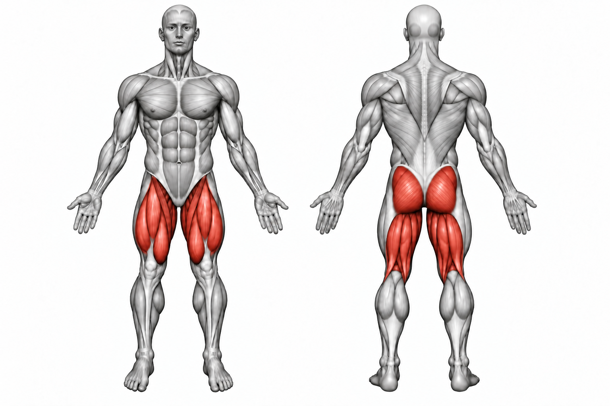

Leg Press


How to Perform
Sit in the leg press machine with your back and hips firmly against the pad. Place your feet about shoulder-width apart on the platform and keep your knees aligned with your feet.
Lower the platform by bending your knees and hips under control. Stop before your lower back lifts from the pad, then press through your feet to extend your legs without locking your knees aggressively.
Primary Muscles
Quadriceps femoris (Quads)
Secondary Muscles
Gluteus maximus (Glutes), hamstrings (Hamstrings), and adductor magnus (Adductors)